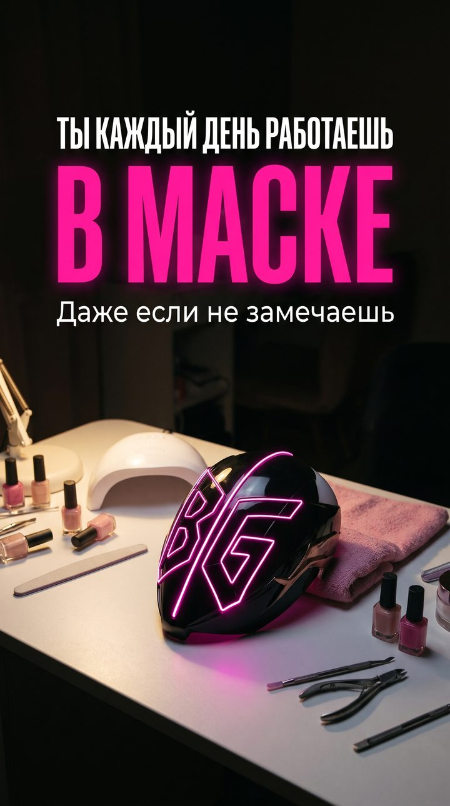
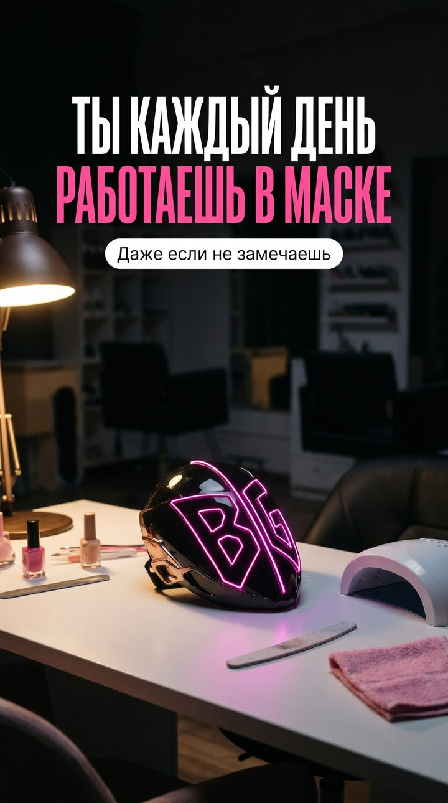
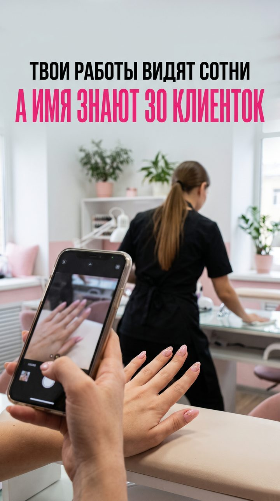
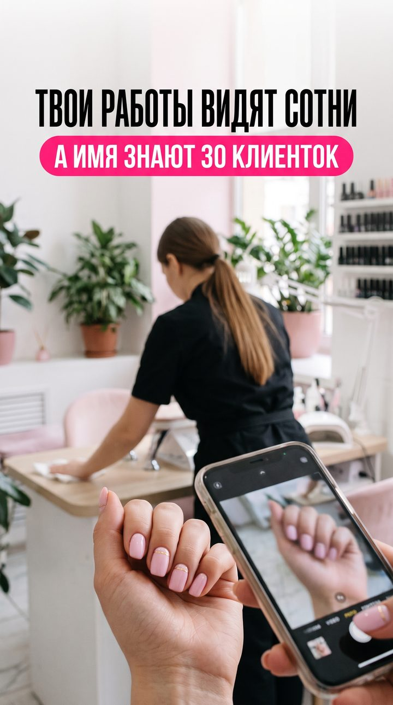
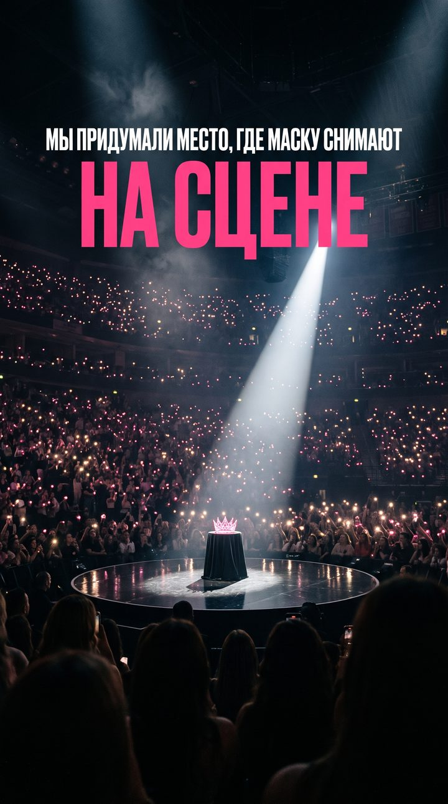
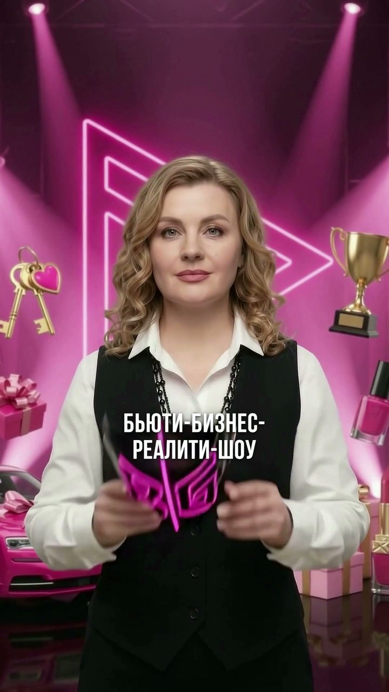
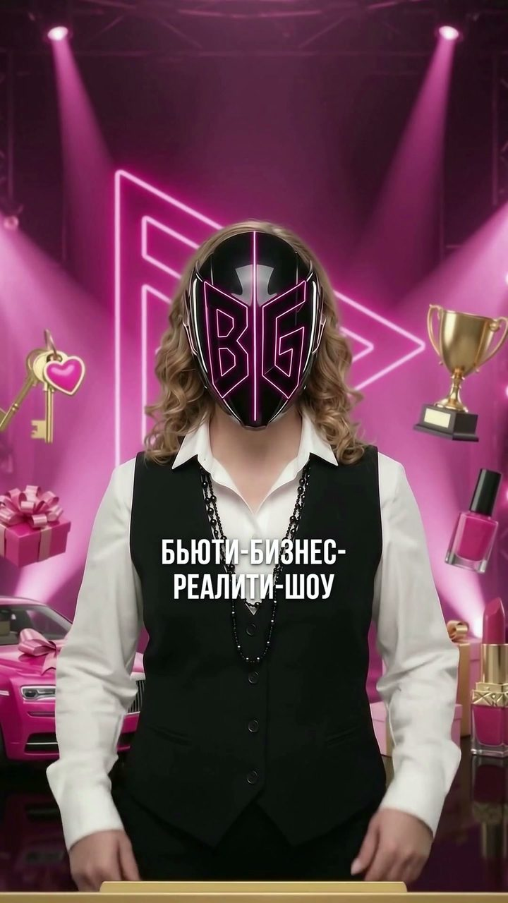
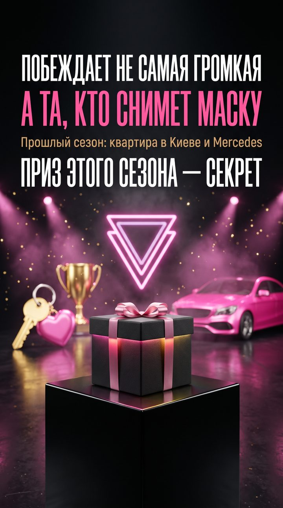
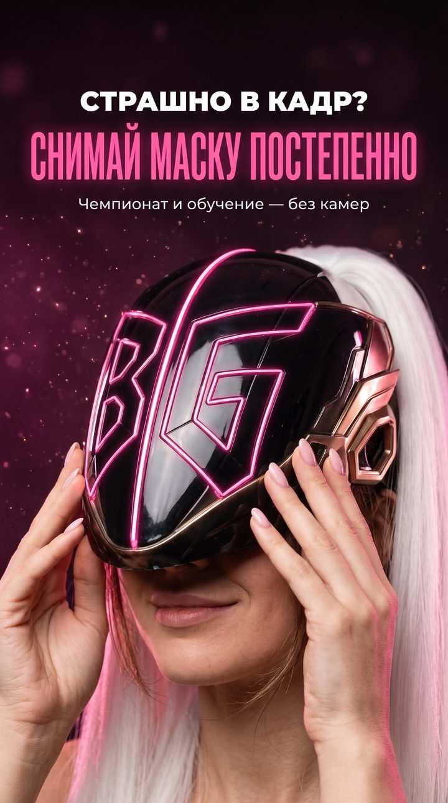
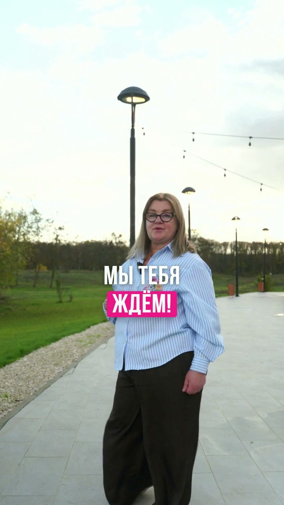

запасной вариант1
Крючок
УтроСтранная фраза заставляет тапнуть дальше: «в смысле, в маске?» Ответ — в следующей сторис.
- Загрузи картинку, текст уже на ней.
- Больше ничего не добавляй.
8 сторис по порядку. Под каждой — что добавить поверх в Instagram. Жми «Скачать картинку» под каждой сторис или «Скачать все сторис». На iPhone можно ещё зажать картинку → «Сохранить в Фото». Отметь галочкой, когда выложила.
Ты каждый день работаешь в маске. Работы видят многие — а имя знают единицы. BEAUTY GAMES — бьюти-бизнес-реалити-шоу, где мастера 3 месяца соревнуются под камерами, учатся у экспертов и борются за титул чемпионата. Кто под маской? Смотри до конца 👀 Старт — 21 декабря. Напиши «СНИМАЮ» в директ — расскажем, как попасть. Подробнее — по ссылке в шапке профиля. #beautygames #бьютимастер #реалитишоу #бьютибизнес #мастерманикюра #бровист #лэшмейкер #визажист #чемпионаткрасоты


запасной вариантСтранная фраза заставляет тапнуть дальше: «в смысле, в маске?» Ответ — в следующей сторис.


запасной вариантОбъясняем «маску»: работа на виду, мастер в тени. Опрос — её собственное «да, это про меня».
Это про меня / Не про меня
От проблемы к решению: есть место, где маску снимают. Подводит к рилсу.
Днём покажу 🔔
Кульминация: после 1–3 снятие маски читается как ответ. Сначала опубликуй сам рилс с подписью сверху страницы.
СМОТРИ ДО КОНЦА 👀
После эмоции — ясность: что это конкретно. Это кадр из рилса, текст добавляешь сама.
ЭТО BEAUTY GAMES3 месяца. Камеры. Эксперты. Чемпионат.Своей генерации для сторис 5 я в «Загрузках» не нашла, поэтому поставила кадр из рилса. Если сгенерируешь — просто замени.

Прошлые призы доказывают, что шоу настоящее. Приз этого сезона — интрига.
Какой приз в этом сезоне? · Квартира / Машина / Секрет 🔒 (верный — Секрет)
Главное возражение «я не готова к камерам». Ответ той же метафорой: маску можно снимать постепенно.

Действие. Слово «СНИМАЮ» — последний шаг метафоры: написать = выйти из-под маски.
СТАРТ 21.12Напиши «СНИМАЮ» в директ — расскажем, как попастьПосле публикации сохрани сторис 5–8 в «Актуальное» → «Шоу».